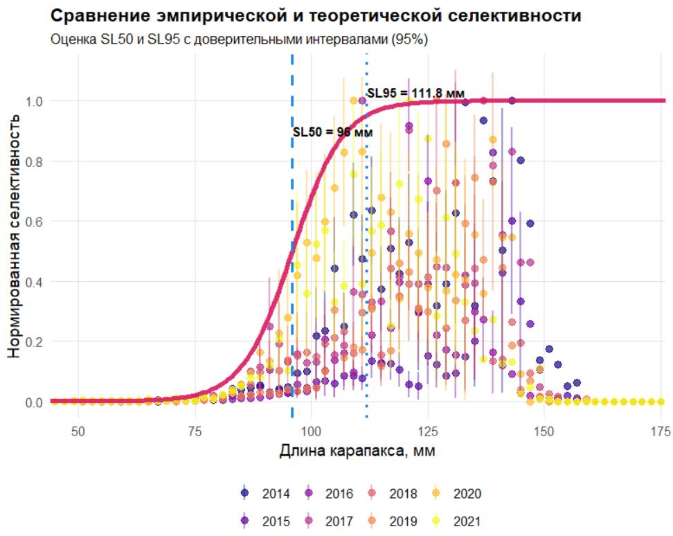

23 Оценка селективности промысла
23.1 Введение
Это практическое занятие посвящено оценке селктивности промысла (SL50 и SL95) для последующего применения length-based методов в условиях ограниченных данных (LBSPR, LBB, LIME). В оценке водных биоресурсов, особенно при работе с неполными данными, существенным фактором, который часто упускают из виду или прячут в “черный ящик” модели, является селективность промысла. Это не абстрактная статистическая величина, а физический фильтр, через который проходит реальная популяция при взаимодействии с орудием лова. Представьте себе рыболовную сеть: она не ловит все особи одинаково, как идеальный сортировщик. Ячейки сетного полотна пропускают мелких особей, задерживают средних, а крупные особи либо избегают и уходят из орудия лова, либо попадают в нее с разной вероятностью. Если мы не учтем этот фильтр, любые оценки биомассы, MSY, или динамики запаса будут систематически искажены, как если бы мы пытались измерить температуру комнаты термометром, который не откалиброван и показывает значения на 5 градусов выше реальных. В контексте length-based моделей — таких как LBSPR, LBB, LIME — селективность становится важной, потому что эти модели оперируют распределением по длине, а не по возрасту, что особенно актуально для беспозвоночных и рыб, где возрастная структура труднодоступна для оценки. Без точного знания того, как орудие лова “фильтрует” особей по длине (размеру), мы не сможем правильно оценить истинную размерную структуру популяции, а значит, не сможем адекватно оценить параметры роста, смертности и воспроизводства. Это не просто техническая деталь — это своего рода фундамент, на котором строится вся последующая оценка. В реальности селективность не постоянна: она меняется в зависимости от размера особей, пола, возраста, поведения, характеристик орудия лова, условий промысла, сезона и региона. В наших данных всегда есть шум, пропуски, аномалии, и наша задача — не прятать эту неопределенность, а честно ее оценить и визуализировать. В этом практическом задании мы оцениваем параметры логистической селективности по длине: SL50 (длина, при которой 50% особей улавливаются орудием лова) и SL95 (длина, при которой 95% особей улавливаются). Эти параметры не абстрактные числа — это биологически значимые величины, которые напрямую влияют на понимание того, как промысел воздействует на популяцию. SL50 — это длина, при которой снасть становится эффективной, а SL95 — длина, при которой снасть практически не пропускает особей. Эти значения используются в length-based моделях для коррекции наблюдаемого распределения по длине и получения истинной структуры популяции. Скрипт начинается с загрузки данных съёмки, которая отражает доступность особей в популяции, и данных промысла, которая отражает выборку, прошедшую через селективный фильтр снасти. Мы фильтруем данные по полу, годам, месяцам, чтобы учесть сезонные и региональные особенности. Затем создаем бины по длине, что позволяет работать с дискретными интервалами, а не с непрерывными величинами, что особенно важно для данных с ограниченной точностью измерений. Селективность моделируется логистической кривой: S(L) = 1 / [1 + exp(-k(L - SL50))], где k = ln(19)/SR, а SR = SL95 - SL50. Это не случайный выбор — логистическая кривая хорошо описывает процесс улавливания, где вероятность попадания в снасть плавно растет с увеличением длины, с четким порогом в SL50. Мы подбираем параметры SL50 и SR так, чтобы вероятность наблюдать промысловые длины была максимальна, используя мультиномиальное правдоподобие. Для устойчивости оценки мы сглаживаем нули в распределении съёмки добавкой 0.5, что предотвращает деление на ноль и обеспечивает корректное масштабирование. Мы также проводим бутстреп-анализ для оценки доверительных интервалов, потому что в реальном мире нет идеальных данных, и наша оценка должна отражать эту неопределенность. Результаты скрипта — это не просто числа в таблице, а биологически интерпретируемая информация: SL50 и SL95 с доверительными интервалами, которые показывают, насколько уверенно мы можем говорить о параметрах селективности. Первый график показывает эмпирическое отношение промыслового и съёмочного распределений в сравнении с теоретической логистической кривой. Если кривая не совпадает с данными — это сигнал о том, что модель неверна или данные нужно перепроверить. Второй график визуализирует саму селективную кривую с отметками SL50 и SL95, что позволяет сразу увидеть, как снасть “фильтрует” особей по длине. Эти графики — прозрачный инструмент коммуникации, который позволяет биологам, менеджерам и промысловикам сразу понять, как работает снасть, без необходимости разбираться в статистических деталях. Важно помнить, что результаты этого анализа — только первый шаг. Нужно проверить их на биологическую правдоподобность: например, SL50 для краба не должен быть меньше размера маленьких особей или больше размера взрослых. Нужно сопоставить с другими источниками данных, учесть сезонные изменения, проверить чувствительность к выбору бинов. Это часть дисциплины — всегда проверять свои допущения, не верить результатам слепо, учитывать неопределенность. В оценке запасов, как и в любой научной работе, нет места иллюзиям контроля. Мы не можем знать истинную селективность с абсолютной точностью, но можем честно оценить ее с учетом доступных данных и неопределенности. Это не слабость, а сила: понимание того, что мы не знаем, позволяет принимать более устойчивые решения, которые не рухнут при изменении условий. В этом и состоит суть научного подхода — не в поиске идеальных ответов, а в честном признании неопределенности и построении решений, которые остаются работоспособными даже в условиях неполных данных.
23.2 Скрипт и входные данные
ВХОДНЫЕ ДАННЫЕ (должны быть в рабочей директории):
- SURVEYDATA.csv - данные съемки (длины особей)
- FISHERYDATA.csv - данные промысла (длины особей)
